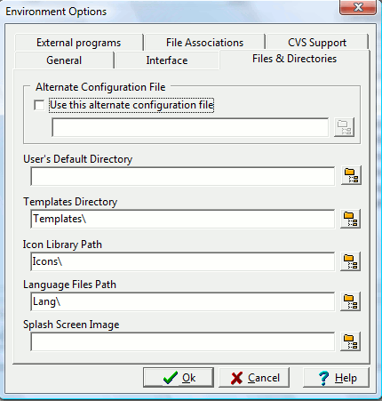

wxDev-C++ typically saves your preferences to a settings file (devcpp.cfg) located in the user AppData directory. You can change where the IDE looks for this settings file. This is useful if you want to have all of the IDE files in one directory for portability. (Some users have been able to use wxDev-C++ on a thumbdrive that they move from computer to computer without having to install it on the computer).
Specifies the default location that the IDE uses (when creating projects, opening, saving, etc.)
Specifies the location of the Dev-C++ project templates (the ones displayed when you click on `New Project').
Specifies the location of the icons for use in your projects.
Specifies the location of the Dev-C++ language files.
You can specify an alternate splash-screen bitmap here.